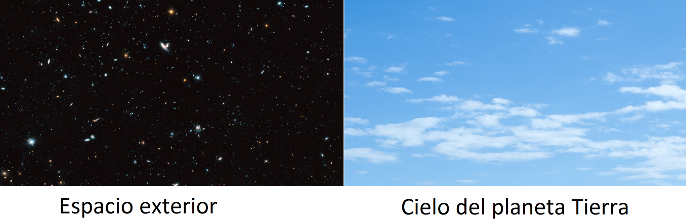
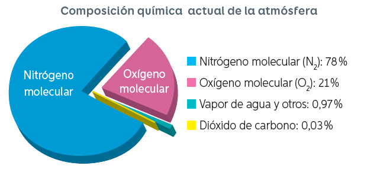
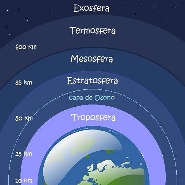

Objetivos
OA16 Reconoce las principales características de la atmósfera y comprende la importancia de esta, para mantener las condiciones actuales de vida en nuestro planeta.
OA16 Reconoce las principales características de la atmósfera y comprende la importancia de esta, para mantener las condiciones actuales de vida en nuestro planeta.
Observa la siguiente imagen y luego responde la pregunta a continuación

Normalmente cuando hemos observado películas o fotografías de la NASA, nos percatamos que el espacio exterior es oscuro (color negro) ¿Por qué ,a pesar de esta situación, cuando está despejado, observamos que el cielo de nuestro planeta es de color azul?
No solamente la Tierra posee atmósfera. Mercurio, Venus, Marte, Júpiter, Saturno, Urano, Neptuno, Plutón, el Sol, algunos satélites de los planetas del Sistema Solar y hasta varios cuerpos celestes fuera de este tienen atmósferas.
¿Pero, a qué se refiere la palabra “atmósfera? Se designa así a una capa compuesta de gases que rodea un cuerpo celeste. Los gases se mantienen en la misma posición debido a las condiciones idóneas de gravedad y temperatura del cuerpo. Así, un planeta tiene mayor probabilidad de mantener los gases de su atmósfera en su sitio si tiene una gravedad alta y una baja temperatura ambiental.
La atmósfera provee una importante protección contra la colisión de cuerpos celestes en la superficie del astro, por lo que aquellos que poseen una atmósfera son poco propensos de tener cráteres en su superficie.

La atmósfera terrestre es la parte gaseosa de la Tierra, siendo por esto la capa más externa y menos densa del planeta. Está constituida por varios gases que varían en cantidad según la presión a diversas alturas. Esta mezcla de gases que forma la atmósfera recibe genéricamente el nombre de aire. El 75 % de masa atmosférica se encuentra en los primeros 11 km de altura, desde la superficie del mar. Los principales gases que la componen son: el oxígeno (21 %) y el nitrógeno (78 %), seguidos del argón, el dióxido de carbono y el vapor de agua.

¿Crees que la atmósfera actual es la misma que respiraban los dinosaurios, o a la que vio surgir la vida en la Tierra? Si tu respuesta es no, estás en lo correcto. La atmósfera ha cambiado mucho desde que el planeta se formó.
La atmósfera consiste en 5 capas principales en función de su temperatura, composición química, densidad y movimiento, pero también posee otras regiones de características especiales. Esto indica que la atmósfera no es solamente una mezcla de gases suspendidos en lo alto del planeta, sino que se trata de una estructura compleja cuya constitución varía según la capa.
1) Troposfera. Es la capa más baja y abarca la superficie terrestre hasta una altura media de 12 kilómetros; unos 17 kilómetros en las regiones ecuatoriales y cerca de 9 kilómetros en polos. En los trópicos puede tener una altitud de hasta 20 kilómetros. Contiene aproximadamente cuatro quintas partes del aire del planeta, y es en ella donde se produce el clima que afecta a los seres vivos, incluyendo los fenómenos atmosféricos.
La temperatura del aire en la troposfera disminuye en tanto aumenta la altitud. ¿Por qué? Bueno, la razón es que el sol calienta la superficie terrestre y esta calienta la parte inferior de la troposfera. De manera similar, la cantidad de vapor de agua suele disminuir a mayor altura y es mayor cerca de la superficie.
La región limítrofe de la troposfera que la separa de la estratosfera, se llama tropopausa. Ahí la temperatura no experimenta variaciones con la altura.
2) Estratosfera. Separada de la troposfera por la tropopausa se encuentra esta capa que contiene un 19 por ciento de los gases atmosféricos, pero muy poca cantidad de vapor de agua. Su altura, del mismo modo que en el caso de la troposfera, varía según la región de la superficie terrestre. Normalmente se encuentra entre los 10-13 y los 50 kilómetros de altitud, pero en los polos comienza a partir de los 8 kilómetros mientras que en zonas cercanas al ecuador inicia a una altura de 18 kilómetros.
Su temperatura es más caliente que la de la troposfera debido a que la capa de ozono absorbe un 97-99 por ciento de la luz ultravioleta del Sol. La capa de ozono es una región de la estratósfera que bloquea los rayos solares e impide que lleguen a los seres vivos en su forma dañina. A pesar de su calor, en su base presenta una temperatura sumamente fría, de hasta -80 grados centígrados.
3) Mesosfera. Se ubica encima de la estratosfera hasta una altura de 80-85 kilómetros en las latitudes medias, donde se encuentra la mesopausa. Esta constituye el límite entre la mesosfera y la termosfera. La temperatura en esta capa desciende nuevamente hasta casi alcanzar los -120 a -143 grados centígrados en su parte superior. Los gruesos gases de la mesosfera son los responsables de frenar los meteoritos y otros fragmentos de cuerpos celestes antes de que impacten contra la superficie terrestre. Lo que ocurre es que justo en la mesosfera se reduce la velocidad de los meteoritos y acaban quemándose.
4) Termosfera. Desde el límite superior de la mesopausa se extiende la termosfera, conocida como atmósfera superior. Se extiende hasta los 500-1,000 kilómetros, y a unos 80-550 kilómetros de la superficie terrestre se localiza la ionosfera, una delgada región conductora de electricidad puesto que se encuentra siempre ionizada, es decir, sus electrones y átomos están cargados eléctricamente debido a la radiación ultravioleta del Sol.
La Termosfera presenta temperaturas que aumentan con la altitud, como consecuencia de la absorción de una elevada radiación solar. Solo en la termosfera es posible una temperatura de hasta 2,000 grados centígrados en su parte superior. No obstante, para un ser humano la sensación no es tan caliente, ya que el número de moléculas contenido no es alto como para provocar el calentamiento del cuerpo.
Es en esta capa donde se producen las auroras boreales, vistas por lo regular en las regiones polares. Aquí también es el sitio donde transcurre el tiempo para los astronautas que orbitan la Tierra en un transbordador espacial o en una estación espacial.
5) Exosfera. Es la última capa, la más externa hasta conectarse con el viento solar. Comprende el área desde la parte superior de la termosfera hasta unos 10,000 kilómetros de altura hasta perderse en el vacío del espacio interplanetario.

Obra publicada con Licencia Creative Commons Reconocimiento Compartir igual 4.0